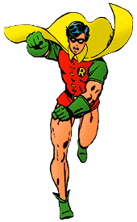
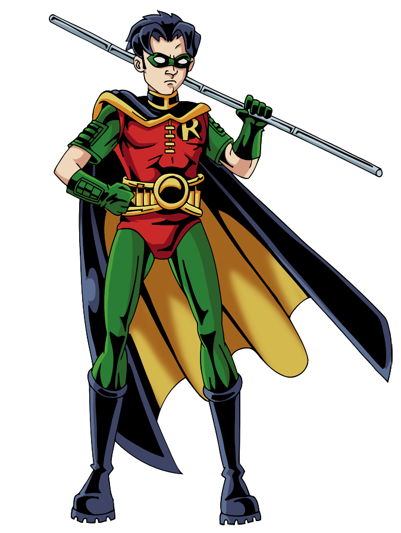
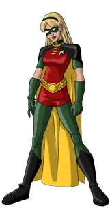
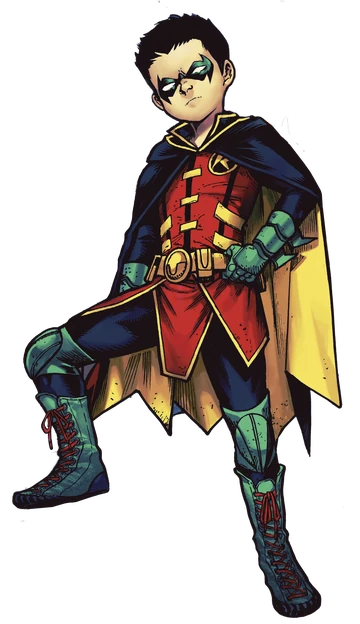

A sombra do Morcego é grande, mas o brilho dele é próprio.
Explore o universo de Dick Grayson, Jason Todd, Tim Drake, Stephanie Brown e Damian Wayne!
Conheça todos os Robins

Dick Grayson

Jason Todd

Tim Drake

Stephanie Brown

Damian Wayne
Conheça todos os Robins que já fizeram parte da história do Batman.
Desde o primeiro, Dick Grayson, até os mais recentes, entendendo suas origens, personalidades, habilidades
e como cada um contribuiu para o legado do Cavaleiro das Trevas.